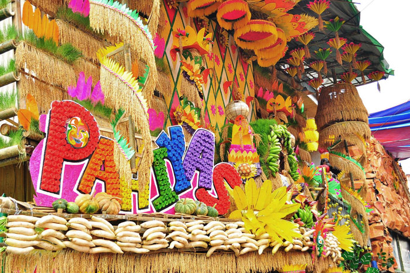
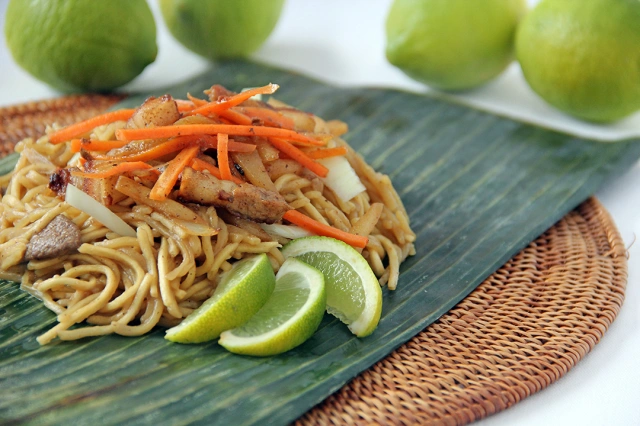
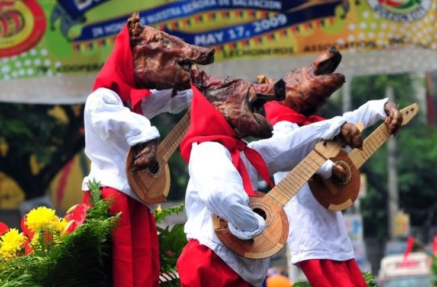
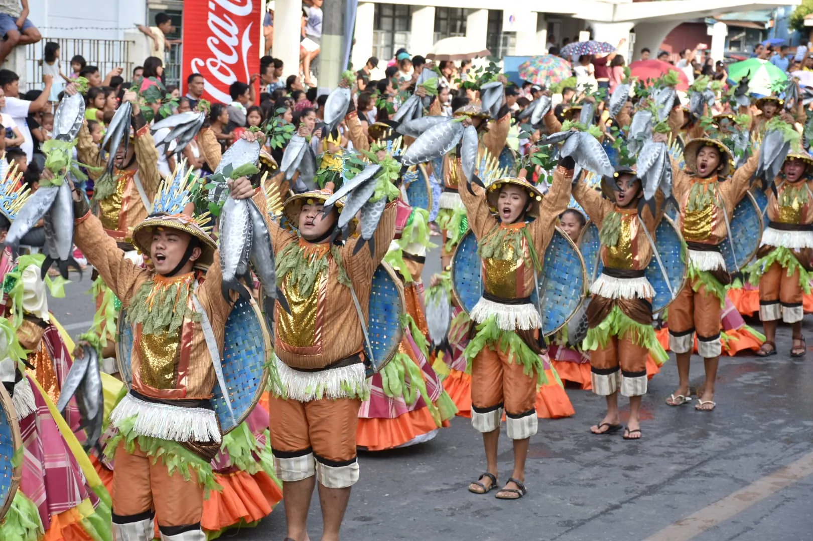
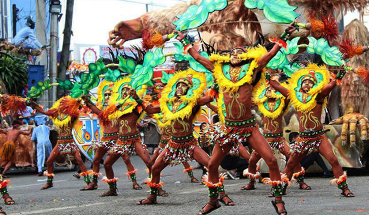

Filipino Culinary Festivals
Explore the vibrant culinary festivals of the Philippines, where food and culture blend in unforgettable ways.
Pahiyas Festival

Held in Lucban, Quezon, the Pahiyas Festival celebrates the harvest with colorful rice decorations and delicious local dishes like Pancit Habhab. This noodle dish, also known as Pancit Lucban, originated in Quezon province and is distinct from other pancit varieties. [1]
Pancit Habhab uses dried flour noodles called miki Lucban, which are different from pancit canton noodles or fresh miki noodles. This dish is traditionally served on a banana leaf and eaten without utensils. To enjoy it, diners grab the banana leaf with noodles and eat directly from it, similar to how one might eat a sandwich (but don’t eat the banana leaf!).

For added flavor, Pancit Habhab is best enjoyed with a splash of cane vinegar, enhancing its tangy and savory profile. This unique dish reflects the simplicity and resourcefulness of Filipino cuisine.
Lechon Festival
The town of Balayan in Batangas is home to the Parada ng Lechon, or Roasted Pig Parade, which takes place every June 24th to honor St. John the Baptist and the submersion of Jesus Christ. Residents and neighboring regions prepare lechon for the parade, creatively dressing them according to various themes, such as a motorcyclist, a student, or even a basketball player.
Before the parade begins, a mass is held at the Immaculate Conception Church, and the lechon are blessed. The fun begins with a water-splashing tradition and opportunities for spectators to enjoy a taste of lechon during the parade. Participants and visitors can expect nonstop eating, drinking, and other exciting activities after the parade. [2]

Bangus Festival

The Bangus Festival is an annual celebration in Dagupan City that has grown to become a cultural icon of the Philippines. Originally conceptualized in the early 1990s by Mayor Al Fernandez, the festival began as a simple bangus harvest event, or "Gilon," for returning Balikbayans. Over the years, it has evolved into a grand celebration featuring vibrant street dance competitions and community activities.
A key highlight of the festival is "Gilon-gilon ed Dalan", a colorful street dance competition initiated by Councilor Belen Fernandez and choreographer Resty Fernandez. The festival also showcases "Kalutan ed Dalan", a massive street grilling party celebrating the harvest of bangus, the city’s iconic milkfish. These events honor Dagupan's identity as the "Bangus Capital of the World."
The Bangus Festival is not only a vibrant celebration of culture and tradition but also a meaningful thanksgiving event for the community, blending religion and local heritage. Mabuhay, Bangus Festival! [3]
Ibalong Festival

The Ibalong Festival in Legazpi City, Albay, is not just a celebration of legends and heroism; it also showcases the region's rich culinary traditions through its "Weekend Market". Set against the scenic backdrop of the bay area, this vibrant market features a variety of local food, unique treats, and handmade goods, making it a paradise for food enthusiasts.
The Ibalong Festival Weekend Market not only supports small businesses but also provides a taste of the Bicolano spirit. The event truly embodies the ingenuity and culinary creativity of Legazpi City. [4]